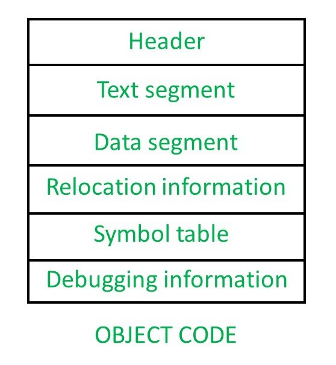
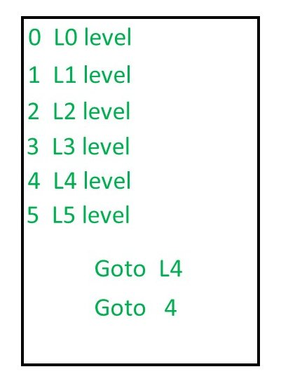

Let assume that, you have a c program, then you give the C program to compiler and compiler will produce the output in assembly code.Now, that assembly language code will give to the assembler and assembler is going to produce you some code. That is known as Object Code.

But, when you compile a program, then you are not going to use both compiler and assembler.You just take the program and give it to the compiler and compiler will give you the directly executable code. The compiler is actually combined inside the assembler along with loader and linker.So all the module kept together in the compiler software itself. So when you calling gcc, you are actually not just calling the compiler, you are calling the compiler, then assembler, then linker and loader.
Once you call the compiler, then your object code is going to present in Hard-disk. This object code contains various part –

- Header –
The header will say what are the various parts present in this object code and then point that parts.So header will say where the text segment is going to start and a pointer to it and where the data segment going to start and it say where the relocation information and symbol information there.It is nothing but like an index, like you have a textbook, there an index page will contains at what page number each topic present. Similarly, the header will tell you, what are the palaces at which each information is present.So that later for other software it will be useful to directly go into those segment.
- Text segment –
It is nothing but the set of instruction. - Data segment –
Data segment will contain whatever data you have used.For example, you might have used something constraint, then that going to be present in the data segment. - Relocation Information –
Whenever you try to write a program, we generally use symbol to specify anything.Let us assume you have instruction 1, instruction 2, instruction 3, instruction 4,….
Now if you say somewhere Goto L4 (Even if you don’t write Goto statement in the high-level language, the output of the compiler will write it), then that code will be converted into object code and L4 will be replaced by Goto 4. Now Goto 4 for the level L4 is going to work fine, as long as the program is going to be loaded starting at address no 0. But most of the cases, the initial part of the RAM is going to be dedicated to the operating system. Even if it is not dedicated to the operating system, then might be some other process which will already be running at address no 0. So, when you are going to load the program into memory, means if the program has to be load in the main memory, it might be loaded anywhere.Let us say 1000 is the new starting address, then all the addresses has to be changed, that is known as Reallocation.

The original address is known as Relocatable address and the final address which we get after loading the program into main memory is known as the Absolute address.
Symbol table –
It contains every symbol that you have in your program.for example, int a, b, c then, a, b, c are the symbol.it will show what are the variables that your program contains.
Debugging information –
It will help to find how a variable is keeping on changing.
GATE CS Corner Questions
Practicing the following questions will help you test your knowledge. All questions have been asked in GATE in previous years or in GATE Mock Tests. It is highly recommended that you practice them.